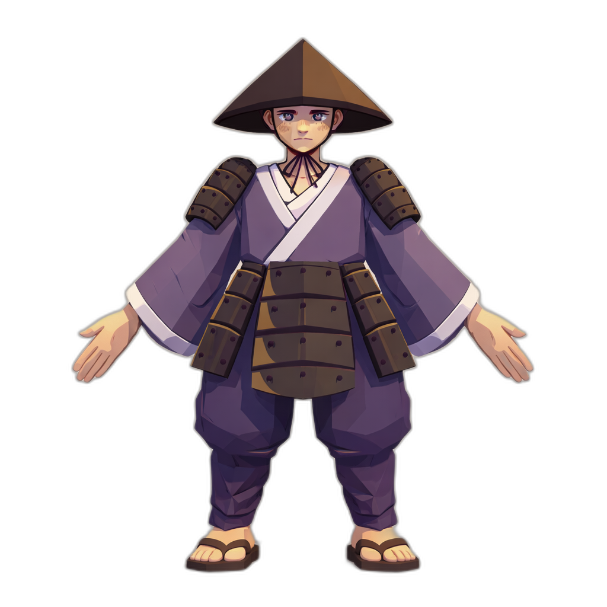

Acorde. Sobreviva. Lembre-se.
O ano é incerto. As ruas chovem neon e sangue. Em Tsukuyomi, você controla Echo, um ronin que desperta sem mestre em uma cidade cyberpunk podre governada por facções corporativas e criaturas místicas de origem esquecida.
Nesta jornada, o Komorebi Bar será seu único refúgio seguro em meio às chamas da vingança, enquanto resolve o mistério de sua própria existência através dos "Ecos de Memória".
LER DOSSIÊ COMPLETO
O combate não é sobre força bruta. É sobre ritmo.
Ação desenfreada. Utilize dashes no ar e esquivas rítmicas para contornar qualquer defesa.
Cada ataque perfeito gera uma janela de tempo diluído. O mundo para, mas sua lâmina não.
1 Hit, 1 Kill. A fragilidade é mútua. Todo erro custa a vida, todo acerto é fatal e sangrento.
Eles controlam a cidade. Eles detêm as suas memórias.
"Basta... você entra aqui e insiste em insultar minha casa... você então entenderá que não se deve julgar o lar dos outros."
Adicione à sua Wishlist e junte-se à resistência antes que as luzes se apaguem.
STEAM WISHLIST